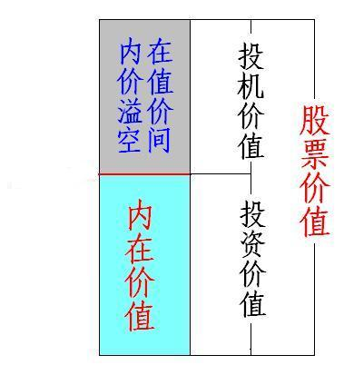
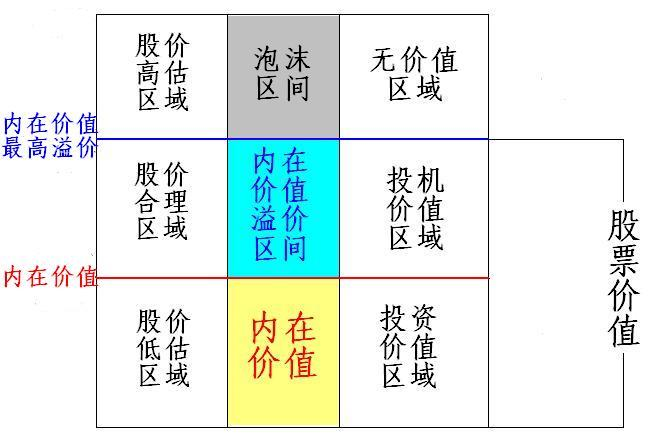

第114篇•教你炒股系列26：关于选股问题的解答（4）
谷为陵
我们已经知道，股票价值是其投资价值与投机价值之和。投资价值是针对股价与内在价值的关系而言的，当股价不高于其内在价值时，股价相对于内在价值就形成了折价，此时的股票就具有了投资价值。而投机价值是针对股价与内在价值可能的溢价率而言的，当股价相对于内在价值有溢价的可能性时，则股价在内在价值之上仍会有一定的上涨空间，此时的股票就具有一定的投机价值。
股票价值与投资价值和投机价值的关系图如下：

股票价值、投资价值、投机价值和股价的关系图如下：

由上图可以看出，当股价低于内在价值时，股价会处于“低估区域”，股票具有投资价值。当股票存在一定的内在价值的溢价空间时，则股价将会处于高于内在价值的“合理区域”，股票具有投机价值。当股价高于内在价值的最高溢价时，则股价将会处于“高估区域”，股票将失去投资和投机价值，毫无价值。
需要注意的是，内在价值可以量化，能够计算出相对准确的数值。而投机价值无法量化，它是一个波动幅度很大的指标，具有很大的不确定性，但这正是投机的魅力所在。
在大多数情况下，股价难以跌破内在价值，尤其是像A股这样长期高估的市场，只有在特大熊市的末期，才会有一些股票跌破内在价值，而此时确实是千载难逢的投资良机。巴菲特之所以能够成功，主要归功于两点：一是他会选股，能够选出长期成长股；二是他会选买点，非常善于在股市暴跌时，不失时机地买进那些跌破内在价值的长期成长股。
应该说，任何股票都具有一定的投机价值，投机价值主要是靠市盈率的溢价来体现的。当一只股票的合理的市盈率为20倍时，若非因业绩增长原因，而是因其它因素的影响，而使得该股的市盈率有可能提升到30倍，那么，该股就具有了因市盈率上调而使股价产生了50%的上涨可能性，该上涨空间就是该股的投机价值所在。
投机价值的大小，或者说市盈率的上调和下降空间，是由四个因素决定的：
一是整体估值的水平。股市的在不同运行状态下，其整体估值是不同的。一般在股市处于牛市时，股市整体市盈率会提高，个股的市盈率也会随股市整体市盈率提高而上调，此时，个股的投机价值普遍增大；在股市处于熊市时，股市整体市盈率会降低，个股的市盈率也会下调，此时，个股的投机价值普遍减小。比如，A股在牛市顶部的平均市盈率约60倍，而在熊市底部的平均市盈率约为15倍。对于绝对大多数股票来说，即使净利润没有发生任何变化，自熊市底部至牛市顶部，股价也会上涨3倍。这3倍的上涨空间，全部缘于股市估值的变化，均为投机价值所赐。
二是个股估值的变化。一只成长股在业绩持续增长后，投资者会将其增长的预期提高，从而提高其市盈率定位水平。比如，现在有一只市盈率为30倍的股票，其在前三年的净利润增长率分别为10%、20%和30%，那么，投资者会预期该股能够在第4年增长40%以上，于是，就会将目前该股的市盈率由30倍上调到40倍或以上。在该股的未来业绩还未兑现时，该股股价就已经按照现在的业绩与未来的市盈率进行定位了，结果股价会因此而上涨33%。这33%的上涨，就是因该股的估值变化而引发。
三是个股“股性”所致。股票市盈率定位是一个很复杂的问题，既与以上所谈的因素相关，还与个股“股性”相关。所谓“股性”，就是指股票是否易于被炒作，股价易于被炒作的，就是股性活跃，而股价不易于被炒作的，就是股性呆滞。流通盘大小、股价高低、有无炒作概念等，都能够影响股票的股性。一般的，流通盘小、股价低、有炒作概念的股票，其市盈率定位较高，其最低市盈率一般在15～20倍；而流通盘大、股价高、无炒作概念的股票，其市盈率定位较低，其最低市盈率可达5～7倍。假若某些流通盘小、股价低、有炒作概念的股票能够跌到市盈率15～20倍左右，那么，这些股票市盈率就有极强的再度上调的要求，股价也就因此具有较大的上涨潜力，这类股票也许没有什么投资价值，但很可能已经具有了较高的投机价值。反之，现在的银行股的平均市盈率虽然只有7～8倍，但因其流通盘巨大、无炒作概念，这些银行股可以说有一定的投资价值，但很难说具有投机价值。
四是个股利好或者利空题材的影响。当个股拥有公开的重大利好题材时，投资者会预期该利好在未来兑现时能够对公司业绩产生重大影响，从而助涨其股价，于是，在利好公告后，该股的估值就会上调，市盈率提高，股价具有较高的投机价值；反之，当公司面临重大利空时，估值会下调，市盈率会降低，股价会下跌，投机价值会降低。
在明白了投资价值和投机价值的涵义后，我们就应该知道了选股的一些基本原则了。
（未完待续）